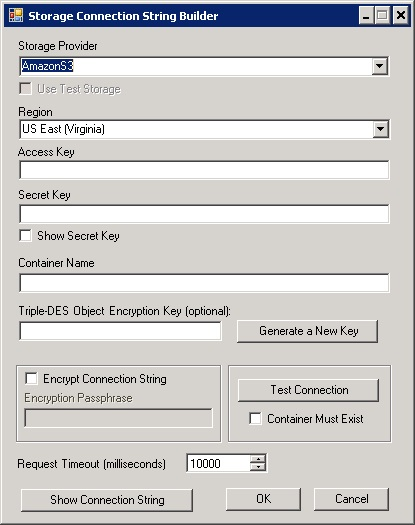
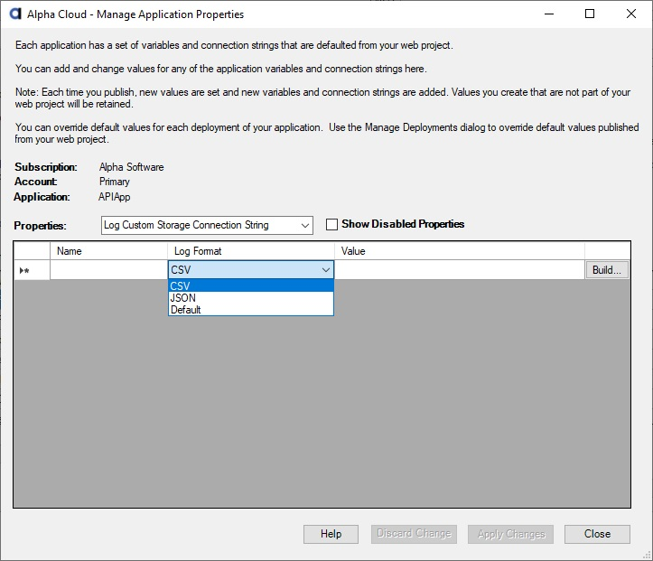

- Enter a name for your new application>
- The default status is "Active", but you can choose to create the application with a "Disabled" status.
- The default primary contact is the account primary contact, but you can change it.
Managing Applications
Managing Application Properties
Applications are fairly simple objects. They have a status and primary contact, and any users you authorize to make changes to them or deploy.
Application names must be unique within an account.
To manage your applications from within Alpha Anywhere:
To delete an application, click in the row of the application you want to delete and then click the button labeled 'Delete This Application'.
Note: You cannot undo this operation! Deleting an application permanently archives the application and any deployments that belong to that application as well. Any scheduled deployment that is archived will be terminated and removed from the active web site it is assigned to. You will still see usage reports for deleted deployments.
Web projects you create in the Alpha Anywhere development environment generally include one or more connection strings for ADO, Alpha DAO, or Storage. The connection strings you define in the Alpha Anywhere development environment are automatically published to Alpha Cloud along with your web project. After your application is published, you can view and edit connection strings and add constants you would like to be available to your running application.
Important Note: Connection strings are set in the Alpha Anywhere publish profile. You can override constants and connection strings for an application on each deployment. Those overrides will take precedence over any value set when the application is published. See Managing Deployment Properties for more on deployment properties
Managing Application Constants
Managing ADO Connection Strings
Managing Alpha DAO Connection Strings
Managing IP Restrictions
Managing Storage Connection Strings
Managing Log Custom Storage
Alpha Cloud maintains application constants in the deployed configuration file. Each constant has a name and a string value. You can access the values of those constants using the following Xbasic syntax in A5W pages and server side event scripts:
Constants You Define
Context.ApplicationConfiguration.GetConstant("<My Application Constant Name>")
Alpha Defined Constants
Context.ApplicationConfiguration.<Predefined Alpha Constant Name>
For Example: Context.ApplicationConfiguration.ServerProduct
Alpha Cloud automatically populates the following Alpha constants for applications deployed on Alpha Cloud:
ServerProduct - The Alpha Anywhere Application Server product your application is deployed on
To maintain constants you define:
Open the Managing Applications Dialog discussed above.
Click on the row of the application you want to manage properties for.
Click on the button labeled "Manage Properties".
The Manage Application Properties dialog will display.
Select "Application Constant" from the properties drop down.
To add a new constant:
Click the name field of the new row (the row that has a * to the left) and enter a name for your constant.
Tab into or click the value field of the same row and enter the value you want to set.
To edit an existing value:
Click the value field of the same row and enter the value you want to set.
Note: Constants can not be deleted, but can be disabled. Check the Show Disabled Properties check box to show the status column and update properties to "Active" or "Disabled".
When you have finished making changes, click "Apply Changes" to update the cloud.
To undo your changes instead of saving them, click "Discard Changes" to reset the data.
Open the Managing Applications Dialog discussed above.
Click on the row of the application you want to manage properties for.
Click on the button labeled "Manage Properties".
The Manage Application Properties dialog will display.

Select "ADO Connection String" from the properties drop down.
To add a connection string:
Click the name field of the new row (the row that has a * to the left) and enter a name for your constant.
Tab into or click the value field of the same row and enter the value you want to set.
To edit an existing value:
Click the value field of the same row and enter the value you want to set.
Note: Connection strings can not be deleted, but can be disabled. Check the Show Disabled Properties check box to show the status column and update properties to "Active" or "Disabled".
You can also click the button in the row labeled "Build..." to open the ADO connection string dialog.

When you have finished making changes, click "Apply Changes" to update the cloud.
To undo your changes instead of saving them, click "Discard Changes" to reset the data.
Note: Alpha DAO connection strings are generally referenced by a unique name within the application and components. This name acts as a placeholder for the actual connection string. By using a name for a connection string, it is possible to change the value by overriding the named connection string value at publication time or in a deployment definition. The same named connection may have one value in Alpha Anywhere, but reference a different value in the publish profile. Each time you publish, the value set in your publish profile replaces the default connection string value set for the Application on Alpha Cloud for each name.
Alpha Cloud also allows you to override the connection string value for each deployment of your published application. Deployment level overrides for named connection strings persist regardless of what value is subsequently published at the Application level.
Open the Managing Applications Dialog discussed above.
Click on the row of the application you want to manage properties for.
Click on the button labeled "Manage Properties".
The Manage Application Properties dialog will display.

Select "Alpha DAO Connection String" from the properties drop down.
To add a connection string:
Click the name field of the new row (the row that has a * to the left) and enter a name for your constant.
Tab into or click the value field of the same row and enter the value you want to set.
To edit an existing value:
Click the value field of the same row and enter the value you want to set.
Note: Connection strings can not be deleted, but can be disabled. Check the Show Disabled Properties check box to show the status column and update properties to "Active" or "Disabled".
You can also click the button in the row labeled "Build..." to open the Alpha DAO connection string dialog.

When you have finished making changes, click "Apply Changes" to update the cloud.
To undo your changes instead of saving them, click "Discard Changes" to reset the data.
By default, your application will allow access from any source IP address. You can set IP restrictions for an application or deployment to either allow specific IP addresses or to deny specific IP addresses from accessing your web site.
IP addresses are specified for version 4 (IPV4) addresses. IPV6 is not yet supported. An IP version 4 address is made up of four separate numbers from 0 to 255 and separated by periods. For example, 192.168.0.1 is an address that is often used by local networks.
Restrictions are specified using the CIDR (Classless Inter-Domain Routing) format. The CIDR format combines an IPV4 address, followed by a forward slash (/) and then adds a number that determines how many of the numbers (beginning at the left) are significant. Since each number ranges from 0 to 255, each of the four numbers will be stored as an eight bit binary number. The total length of an IPV4 address is thirty-two bits.
For example:
Note: The bit length value 0 is used with the address 0.0.0.0 (as in 0.0.0.0/0) to mean "all addresses". That value is not particularly useful for IP restrictions as preventing all addresses does not make your site very useful and allowing all addresses is the default behavior anyway.
To edit IP restrictions for your application:
Open the Managing Applications Dialog discussed above.
Click on the row of the application you want to manage properties for.
Click on the button labeled "Manage Properties".
The Manage Application Properties dialog will display.
Select "IP Restrictions" from the properties drop-down.
The "IP Restrictions" panel will be displayed.
Click the "Enable IP Restrictions" checkbox to enable IP specific access.
Select the default behavior (allow or deny all addresses).
Choose whether you want to check both the source IP from the incoming connection and the x-forwarded-for header in determining whether to allow or deny access.
Select the action to take when access is denied. Your options are:
Add IP addresses (in CIDR format) that are exceptions to the default behavior (allow or deny).
When you have finished making changes, click "Apply Changes" to update the cloud.
To undo your changes instead of saving them, click "Discard Changes" to reset the data.
Open the Managing Applications Dialog discussed above.
Click on the row of the application you want to manage properties for.
Click on the button labeled "Manage Properties".
The Manage Application Properties dialog will display.

Select "Storage Connection String" from the properties drop down.
To add a connection string:
Click the name field of the new row (the row that has a * to the left) and enter a name for your constant.
Tab into or click the value field of the same row and enter the value you want to set.
To edit an existing value:
Click the value field of the same row and enter the value you want to set.
Note: Connection strings can not be deleted, but can be disabled. Check the Show Disabled Properties check box to show the status column and update properties to "Active" or "Disabled".
You can also click the button in the row labeled "Build..." to open the storage connection string dialog.
When you have finished making changes, click "Apply Changes" to update the cloud.
To undo your changes instead of saving them, click "Discard Changes" to reset the data.
Alpha Cloud encrypts and copies log files from running servers to private storage so you can retrieve them from within Alpha Anywhere even when the instances have shut down.
You can request that the log files also be copied to your own cloud storage (currently S3 or Azure) as well. This is useful if you have a log analysis tool that is capable of pulling in files automatically and running analytics against them.
Note: Alpha Cloud copies partially complete log files to private storage so you have access to them in Alpha Anywhere sooner. Because some log analyzers require a complete file, log files are not copied to custom log storage until they are complete. As a result you will see a delay in logs moving to log custom storage.
Open the Managing Applications Dialog discussed above.
Click on the row of the application you want to manage properties for.
Click on the button labeled "Manage Properties".
The Manage Application Properties dialog will display.
Select "Log Custom Storage Connection String" from the properties drop down.
To add a connection string:
Click the value field beside one of the following names.
Enter a connection string for the log custom storage or click the button in the row labeled "Build..." to open th storage connection string dialog.
To edit an existing value:
Click the value field of the same row and enter or build the value you want to set.
You can also click the button in the row labeled "Build..." to open the storage connection string dialog.
When you have finished making changes, click "Apply Changes" to update the cloud.
To undo your changes instead of saving them, click "Discard Changes" to reset the data.